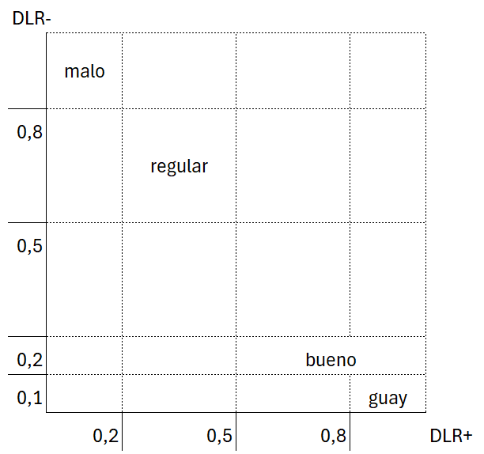
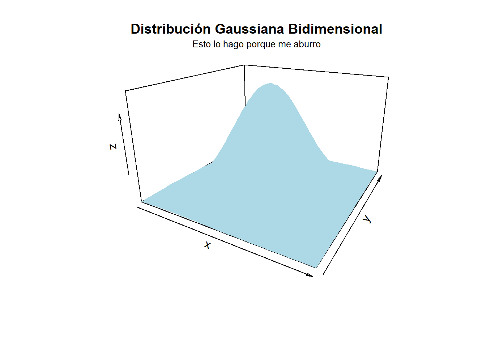
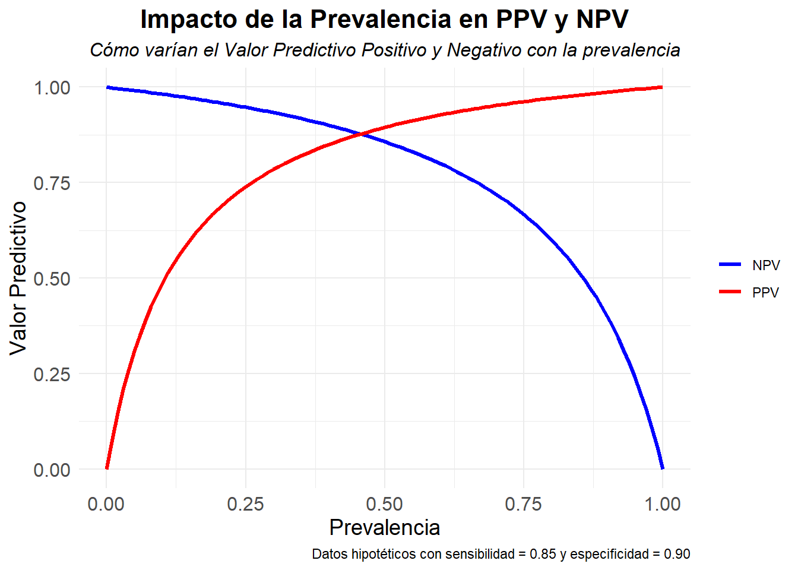

library(dplyr)
df <- data.frame(col1 = c(327, 115),
col2 = c(208, 815)
)
colnames(df) <- c("D=0", "D=1")
rownames(df) <- c("Y=0", "Y=1")
df_extended <- rbind(df, "Total" = colSums(df))
df_extended <- df_extended |> mutate("Total" = rowSums(df_extended))
df_extended
## D=0 D=1 Total
## Y=0 327 208 535
## Y=1 115 815 930
## Total 442 1023 14651.2 Estudios de cohorte y casos-control ✓

Validación de la estimación mediante el intervalo de confianza. (medir de dónde a dónde podría tener mis estimaciones) \(\Rightarrow\) ¿Y si no hubiera trabajado con esta poblacion sino con otra con las mismas caracteristicas y de las misma poblacion?
Mejor hacer un IC con una muestra pequeña que tirar a bootstrap. Los elementos de la muestra son totalmente independientes y los resultados de uno no depende del otro. Con bootstrap no creamos nada nuevo sino que depende de la muestra original. (a final del tema3 se detalla circustancias donde es mejor usar bootstra)
Siempre que tengamos una alternativa teórica es preferible a bootstrap.
Estudios cohorte
Supongamos que realizamos un experimento con resultados {éxito, fracaso} y sea \(\text{p = p(éxito)}\). Repetimos el experimento n veces en condiciones independientes. Sea \(X \sim \text{"número de éxitos en n pruebas"}\) bajo el modelo teórico B(n,p). Sea \(\hat p\) = número de éxitos observados en el total de muestras = \(\frac{x}{n}\)
\(N\) = nº de sujetos seleccionados aleatoriamente de la población
\(n_{{D}}\) = nº de sujetos con la enfermedad de los N seleccionado
\(n_{\overline{D}}\) = nº de sujetos sin la enfermedad de los N seleccionados
\(n^+\) = nº de sujetos que han dado positivo en el test de los N
\(n^-\) = nº de sujetos que han dado negativo en el test de los N
\[ \scriptsize \begin{array}{cc|c|c|c} & & \text{prueba +} & \text{prueba -} & \\ & & D = 0 & D = 1 & \\ \hline \text{persona enferma} & \text{Y = 0} & n_{\overline{D}}^{-} & n_{D}^{-} & n^{-} \\ \text{persona sana} & \text{Y = 1} & n_{\overline{D}}^{+} & n_{D}^{+} & n^{+} \\ \hline && n_{\overline{D}} & n_{D} \end{array} \]
\[ \scriptsize \begin{array}{c|c|c|c} & \text{persona enferma} & \text{persona sana} & \\ & \text{Y = 0} & \text{Y = 1} & \\ \hline \text{prueba +} \ D = 0 & n_{\overline{D}}^{-} & n_{\overline{D}}^{+} & n_{\overline{D}} \\ \text{prueba -} \ D = 1 & n_{D}^{-} & n_{D}^{+} & n_{D} \\ \hline & n^{-} & n^{+} \end{array} \]
Detrás de cada una de las probabilidades hay una distribucion binomial. Los intervalos de confianza de cada proporción binomial \(\hat p\) se puede calcular a través de:
- Intervalos de confianza exactos \(\Rightarrow\) Intervalo de Clopper-Pearson (se basa en la función de distribución binomial acumulativa invertida)
\[ \text{IC}_{1-\alpha} = \left[ \frac{x}{x + (n - x + 1)F_{1-\alpha/2, 2x, 2(n-x+1)}}, \, \frac{(x+1)F_{\alpha/2, 2(x+1), 2(n-x)}}{(n-x) + (x+1)F_{\alpha/2, 2(x+1), 2(n-x)}} \right] \]
- La distribución binomial o métodos asintóticos \(\Rightarrow\) Cuando \(n\) es grande, las observaciones son independientes y \(\hat p\) no es cercano a 0 o 1 (eventos raros)
\[ \left( \frac{x}{m} \pm z_{\alpha/2} \sqrt{\frac{ x\left(1 - \frac{x}{m}\right)}{m}} \right) \]
Estimadores (I)
Para estimar la probabilidad de verderos negativos \(\widehat{Se}\) se usa la v.a.:
\[ X \sim \text{"número de negativos en el grupo de enfermos"} \sim Bin(n_{D}^{+}, Se) = Bin(n_{D}^{+}, n_D) \]
Para estimar la probabilidad de falsos positivos \(\widehat{(1-Sp)}\) se usa la v.a.:
\[ X \sim \text{"número de enfermos en el grupo de sanos"} \sim Bin(n_{\overline{D}}^{+}, (1-Sp)) = Bin(n_{\overline{D}}^{+}, n_{\overline{D}}) \]
Para estimar el valor predictivo \(\widehat{PPV}\) se usa la v.a.:
\[ X \sim \text{"número de individuos enfermos en sujetos con test postitivo."} \sim Bin(n_{\overline{D}}, (1-Sp)) TERMINAR \]
\[ X \sim Bin(n^+, ppv), \quad \quad x = n_{\overline{D}}^+ \]
Para estimar el valor predictivo \(\widehat{NPV}\) se usa la v.a.:
\[ X \sim \text{número de individuos enferos en los que tienen test postitivo} ~ Bin(n^-, npv), \quad \quad x = n_{\overline{D}}^- TERMINAR \]
Ejemplo del intervalo de confianza exacto para la sensibilidad.
\[ IC_{1-\alpha} (\widehat{\text{Se}}) = \left( \frac{1}{1 + \frac{n_D^+ F_{2n_D^+ , 2(n_D - n_D^+ + 1); 1-\alpha/2}}{n_D^+ - n_D^+ + 1}} , \ \frac{1}{1 + \frac{(n_D^+ + 1) F_{2(n_D^+ + 1), 2(n_D - n_D^+); \alpha/2}}{n_D - n_D^+}} \right) \]
Ejemplo del intervalo de confianza por el método asintótico para la sensibilidad.
\[ IC_{1-\alpha} (\widehat{Se}) = \left( \frac{n^+_D}{n_D} - z_{\alpha/2} \cdot \sqrt{\frac{1}{n_D} \cdot \frac{n^+_D \left( n_D - n^+_D \right)}{n_D}}, \; \frac{n^+_D}{n_D} + z_{\alpha/2} \cdot \sqrt{\frac{1}{n_D} \cdot \frac{n^+_D \left( n_D - n^+_D \right)}{n_D}} \right) \]
Ejemplo 2.2.
El objetivo es determinar qué constituye un éxito y en qué subgrupo estamos evaluando la cantidad de éxitos.
En el cálculo de estimaciones e IC, en cada IC que genero cometo un error y a mayor númeor de estimaciones e IC el error total de mi proyecto aumenta o la precision total disminuye.
- Probabiidad de que la sensibilidad esté dentro de mi intervalo, 0.9.
- Probabiidad de que la especificidad esté dentro de mi intervalo, 0.9.
- Probabiidad de que la sensibilidad esté dentro de mi intervalo y de que la especificidad esté dentro de mi intervalo, 0.9*0.9. (es un cálculo teórico para entenderlo)
Los estimadores de la probabilidades de clasificación son independientes. Esto nos motiva a buscar una region de confianza de tal forma que ambas estimaciones estén dentro de esa región con una probabilidad del 0.9.
Región de confianza para (\(\widehat{Se}, (\widehat{1-Sp})\))
Confianza bidimensional \(1-\alpha = \text{"prob de caer en el IC * prob de caer en el otro IC"} = \beta^2 : \beta = \sqrt{1-\alpha}\).
La RC es una zona de confort en dos dimensiones. En caso de trabajar en dos dimensiones separadas consigo una confianza menor.
Ejemplo 2.2. (cont.)
Los siguientes datos corresponden a un estudio cohorte realizado en el que se tenían 1465 hombres con posible enfermedad coronaria para los que se tiene el resultado de una prueba diagnóstica de esfuerzo (EST). La determinación de la enfermedad se realiza con arteriografía, la medida gold standard. Los datos obtenidos son los siguientes:
En medcalc por defecto te calcula la asitótica (independientemente del tamaño que tengas). (para estudio de cohortes no hace falta indicarle la prevalencia porque da igual en este caso)
\(\widehat{PPV}\), estimo los casos positivos: 930 + cuántos lo son de verdad: 815 = \(\frac{815}{930}\)
\(\widehat{NPV}\), casos negativos: 327 + cuántos lo son de verdad: 535 = \(\frac{327}{535}\), un resultado positivo en la prueba estaría asociado a detectar un 87,63% de los casos
source("calculo_estimadores_pruebas_diagnosticas.R")n_D <- 1023
n_D_pos <- 815
n_D_neg <- 208
n_noD <- 442
n_noD_pos <- 115
n_noD_neg <- 327
n_pos <- n_D_pos + n_noD_pos
n_neg <- n_D_neg + n_noD_neglibrary(tibble)
calculo_estimadores(n_D, n_D_pos, n_D_neg, n_noD, n_noD_pos, n_noD_neg, n_pos, n_neg, tipo_estudio = "cohorte") |> as.data.frame() |> rownames_to_column(var = "rownames") %>% filter(rownames %in% c('Se', 'Sp', 'Uno_menos_Sp', 'PPV', 'NPV'))
## rownames Puntual IC.lower IC.upper
## 1 Se 0.7966764 0.7720135 0.8213394
## 2 Sp 0.7398190 0.6989177 0.7807203
## 3 Uno_menos_Sp 0.2601810 0.2192797 0.3010823
## 4 PPV 0.8763441 0.8551872 0.8975010
## 5 NPV 0.6112150 0.5699080 0.6525219Un resultado positivo en la prueba estaría asociado a detectar un 87,63% de los casos.
Estimamos que al 79,67 % de los enfermos se les detectará la enfermedad mediante la prueba de esfuerzo. Estimamos que un 26,02 % de los sanos también se les diagnosticará como enfermos.
Región de confianza rectangular: \(\displaylines{IC_{95} (\widehat{1-Sp}, \widehat{Se}) = (0.2193, 0.3011) x (0.772, 0.821) : \\ (1−\alpha^{*}) * (1−\alpha^{*}) = (1−\alpha) \Rightarrow (1−\alpha^{*}) = \sqrt{1−\alpha} = \sqrt{0.95} = 0.9747}\)
Estimadores (II) - DLR
Comparación de casos positivos dentro del grupo de enfermos y casos positivos dentro del grupo de sanos \(\Rightarrow\) En funcion del cociente se puede decididr cuál es más verosímil.
Se estiman las razones de verosimilitud a través de las estimaciones de las probabilidades de clasificaciones.
\(\widehat{DLR^+} = \frac{\widehat{Se}}{\widehat{1-Sp}} = \frac{{\frac{n_{D}^{+}}{n_D}}}{\frac{n_{\overline{D}}^{+}}{n_{\overline{D}}}}\)
\(\widehat{DLR^-} = \frac{\widehat{1-Se}}{\widehat{Sp}} = \frac{{\frac{n_{D}^{-}}{n_D}}}{\frac{n_{\overline{D}}^{-}}{n_{\overline{D}}}}\)
IC para las razones de verosimilutes
Los intervalos de confianza de cada razón de verosimilitud estimada se determinan a partir del resultado asintótico.
Pasamos los DLR a escala logarítmica y separamos las componentes sensibilidad y especificidad. Trabajamos con el método delta.
\[ \left( \log DLR^{+}, \log DLR^{-} \right) \approx \mathcal{N} \left( \left( \log DLR^{+}, \log DLR^{-} \right); \begin{pmatrix} \frac{1 - Se}{n_D Se} + \frac{Sp}{n_D (1 - Sp)} & - \left( \frac{1}{n_D} + \frac{1}{n_D} \right) \\ \left( \frac{1}{n_D} + \frac{1}{n_D} \right) & \frac{Se}{n_D (1 - Se)} + \frac{1 - Sp}{n_D Sp} \end{pmatrix} \right) \]
Ejemplo.
Dado el \(IC(log(\widehat{DLR^+})) = (-0.6, 2) : e^-0.6 < \widehat{DLR+} < e^2\). Se obtiene el \(IC(\widehat{DLR^+}) = (e^{-0.6}, e^2) = (0.55, 0.79)\)
“Las dos razones de verosimilitud no son independientes sino que cuando trabajamos con sus logaritmos tienen un comportamiento normal bidimensional. La covarianza negativa nos indica que una razón aunmenta la otra disminuye.”
library(MASS)
library(ggplot2)
# Definimos la media y la matriz de covarianza
media <- c(0, 0)
covarianza <- matrix(c(1, 0.5, 0.5, 1), nrow = 2)
# Generamos los puntos con una distribución normal multivariada
datos <- mvrnorm(n = 1000, mu = media, Sigma = covarianza)
datos <- as.data.frame(datos)
colnames(datos) <- c("X", "Y")
library(plot3D)
x <- seq(-3, 3, length = 50)
y <- seq(-3, 3, length = 50)
z <- outer(x, y, function(x, y) mclust::dmvnorm(cbind(x, y), mean = media, sigma = covarianza))
persp3D(x, y, z, theta = 30, phi = 20, expand = 0.6, col = "lightblue", main = "Distribución Gaussiana Bidimensional")
mtext("Esto lo hago porque me aburro", side = 3, line = 0.5, cex = 0.8) # side = 3 coloca el texto arriba, line ajusta la distancia
Ejemplo 2.2. (cont. 21)
calculo_estimadores(n_D, n_D_pos, n_D_neg, n_noD, n_noD_pos, n_noD_neg, n_pos, n_neg, tipo_estudio = "cohorte") |> as.data.frame() |> rownames_to_column(var = "rownames") %>% filter(rownames %in% c('DLR_pos', 'DLR_neg')) rownames Puntual IC.lower IC.upper
1 DLR_pos 3.0620086 2.6086910 3.5941001
2 DLR_neg 0.2748288 0.2405299 0.3140186\(DLR^{+}\): un resultado positivo es 3 veces más creíble en el grupo de enfermos que en el grupo de sanos
\(DLR^{-}\): comparamos negativos en el grupo de sanos y en el grupo de enfermos. En el grupo de sanos deben ser pocos, por que lo que \(DLR^{+}<<<1\). Para facilitar la comparativa se le suele dar la vuelta (al parecer es más fácil interpretar un 2 que un 0.5)
En el 95 % de las muestras es entre 2.6 y 3.5 veces más creíble un resultado positivo en el grupo de los enfermos que en los sanos.
El test de esfuerzo da positivo tres veces más en los enfermos que en sanos. Es tres veces más versosímil encontrar un positivo en la prueba de esfuerzo en un individuo enfermo que en un individio sano.
Cuando tenemos un resultado negativo en la prueba es 3.7 (1/0.2748) más verosímil un negativo en un individuo sano que en un individuo enfermo.
Estudios caso control
El número de sujetos enfermos seleccionados y el de sujetos sanos seleccionados son predeterminados.
Esta situación equilibrada no suele ser representativa de la realidad. La frecuencia relativa de sujetos enfermos es normalmente mucho mayor que en la población, al menos cuando la prevalencia es relativamente baja.
La prevalencia muestral no representativa de la prevalenciapoblacional no afecta a las estimaciones de sensibilidada, especificidad ni a las razones. Pero sí afectaa los valores predictivos.
Trabajamos suponiendo que tenemos una estimación para la prevalencia real.
En estudios de caso-control la prevalencia de la población no se conserva en la muestra (los sujetos se elige en función de si tienen o no la enfermedad). En los estudios de cohortes ese problema no existe ya que se ha buscado un grupo de individuos que se someten a un riesgo y se espera a ver si tenían o no la enfermedad.
Definimos los valores predictivos en función de la prevalencia. Con el teorema de Bayes se expresan los valores predictivos en función de la sensibilidad y la especificidad.
\[ \scriptsize \begin{aligned} PPV &= P(D=1 | Y=1) \\ &= \frac{p(D=1 \cap Y=1)}{p(Y=1)} \\ &= \frac{p(Y=1 | D=1) · p(D=1)} {p(Y=1 | D=1) · p(D=1) + p(Y=1 | D=0) · p(D=0)} \\ &= \frac{\rho * Se}{\rho * Se + (1-\rho)(1-Sp)} \end{aligned} \begin{aligned} NPV &= P(D=0 | Y=0) \\ &= \frac{p(D=0 \cap Y=0)}{p(Y=0)} \\ &= \frac{p(Y=0 | D=0) · p(D=0)} {p(Y=0 | D=0) · p(D=0) + p(Y=0 | D=1) · p(D=1)} \\ &= \frac{(1-\rho) · Sp}{(1-\rho) · Sp + \rho · (1-Sp)} \end{aligned} \]
\[\hat{PPV} = \frac{\rho * \hat{Se}}{\rho * \hat{Se} + (1-\rho)(1-\hat{Sp})} \quad \quad \quad \hat{NPV} = \frac{(1-\rho) · \hat{Sp}}{(1-\rho) · \hat{Sp} + \rho · (1-\hat{Sp})}\]
Supongamos que desconocemos el valor exacto de la prevalencia:
- Si la prevalencia es máxima, \(\text{si }\rho=1 \Rightarrow PPV = 1 \text{ y } NPV = 0\).
- Si la prevalencia es mínima, \(\text{si }\rho=0 \Rightarrow PPV = 0 \text{ y } NPV = 1\).

Definimos los IC valores predictivos en función de las DLR.
\[\scriptsize \frac{PPV}{1-PPV} = DLR^+ (\frac{\rho}{1-\rho}) \Rightarrow ln(\frac{PPV}{1-PPV}) = ln(DLR^+) + ln(\frac{\rho}{1-\rho}) = ln(DLR^+) + logit(\rho) = ln(DLR^+) + H\]
\(\begin{aligned} \text{Sea } IC\left(\ln\left(\widehat{DLR^-}\right)\right) = (A, B) &\Rightarrow A < ln(\widehat{DLR^-}) < B \\ &\Rightarrow -B < -ln(\widehat{DLR^-}) < -A \\ &\Rightarrow - H - B < logit(NPV) < - H - A \\ &\Rightarrow - (H + B) < logit(NPV) < - (H + A) \\ &\Rightarrow - (H + B) < ln(\frac{NPV}{1-NPV}) < - (H + A) \\ &\Rightarrow e^{- (H-B)} < \frac{NPV}{1-NPV} < e^{- (H+A)} \\ &\Rightarrow e^{- (H-B)} * (1-NPV) < NPV < e^{- (H+A)} * (1-NPV) \\ &\Rightarrow \text{Como } \widehat{ppv} > 0, exp^{b+H} > exp^{a+H}(1-\widehat{ppv}) > \frac{exp^{b+H}}{1+exp^{b+H}}, \\ & \quad\quad \frac{e^{- (H-B)}}{1 -e^{- (H-B)}} < NPV < \frac{e^{- (H+A)}}{1 -e^{- (H+A)}} \end{aligned}\)
Ejemplo 2.3.
Supongamos que en un estudio caso-control, para una enfermedad con una prevalencia de 2%, el intervalo de confianza para el logaritmo de la razón de verosimilitud de diagnóstico positivo es \(IC_{95} \left( log(\widehat{DLR^+}) \right) = (1, 2.5)\)) ¿Cuál sería el intervalo de confianza para el valor predictivo positivo?
\(IC_{95}(logit(\widehat{PPV^+})) = ( log \left( \frac{0.02}{0.98} \right) + 1.5, log \left( \frac{0.02}{0.98} \right) + 2.5 ) = (-2.39, -1.39)\)
\(IC_{95}(\widehat{PPV^+}) = \left( \frac{e^{-2.39}}{1+e^{-2.39}}, \frac{e^{-1.39}}{1+e^{-1.39}} + 2.5 \right) = (0.08, 0.2)\)
El IC indica que la prueba diagnóstica no sirve para diagnosticar la enfermedad. Dando positivo el test solo acierta la enfermedad de 0.08 a 0.2. La probabilidad de que dando positivo estemos ante un individuo enfermo es muy baja entre el 8 % y el 20 %. Otra cosa sería el NPV. No lo sabemos pero por lo menos podría ser buena para determinar que con un resultado negativo el paciente estuviera sano.
La prueba diagnóstica no es buena ya que solo acertaría entre un 0.08 y un 0.2 de las veces basándome en haber visto un valor positivo en la prueba. Si tomáramos esta prueba diagnóstica para hacer un diagnóstico en función del resultado los aciertos son muy pocos.
Comparación entre pruebas diagnósticas
El objetivo es comparar 2 test diagnósticos: test A y test B. Podemos comparar tres medidas (cada una de ellas enfocadas a un objetivo distinto): - Probabilidades de clasificación (cómo refleja la prueba el estado real del paciente.)
- Valores predictivos (cómo refleja la prueba el estado real del paciente)
- Razones de verosimilitud de diagnóstico (cómo de creible es un valor postivio o negativo)
En caso de no encontrar una prueba diagnóstica “superior” a otra basándonos en las probabilidades de clasificación, podemos intentar encontrarla por medio de los valores predictivos.
Métricas para la comparación.
- Diferencias absolutas (\(\Delta\)) (p.e. \(\Delta Se(A,B) = Se(A) - Se(B))\)
- Oddratios (ο) (p.e. \(οSe(A,B) = \frac{\frac{Se(A)}{1-Se(A)}}{\frac{Se(B)}{1-Se(B)}} = \frac{Se(A)·(1-Se(B))}{Se(B)·(1-Se(A))}\)
- Cocientes o medidas relativas (r) (p.e. \(rSe(A,B) = \frac{Se(A)}{Se(B)}\))
Aunque se puede elegir cualquiera de ellas para comparar dos pruebas, los cocientes son más fáciles de interpretar que los odd ratios. Intenamos encontrar diferencias absolutas y en caso de no haberlas lo intentamos con los cocientes relativos.
En caso de tener dos pruebas diagnósticas basadas en unidades distintas, no podemos hacer difrencia de una contra la otra, pero sí puedo hacer comparaciones haciendo comparaciones entre ambas pruebas.
Probabilidades de clasificación
Se puede utilizar cualquiera métrica de comparación. Aunque la más utilizada es la métrica de cocientes o medidas relativas debido a su fácil interpretación.
Ejemplo:
- \(rSe(A;B) = \frac{Se(A)}{Se(B)} =25\): el test A tiene 25 veces más verdaderos positivos que el test B.
- \(rSe(A,B) = 0.3\) : la cantidad de verdaderos positivos del test A es el 30 % de los observados en el test B
Valores predictivos
La métrica utilizada son los odds ratios o cocientes.
Si la prevalencia de la enfermedad es baja:
- \(rPPV(A,B) \approx oPPV(A,B)\)
- \(rNPV(A,B) \approx 1\)
Si la prevalencia no es baja es preferible utilizar cocientes
<<<<<<< HEADEjemplo:
- \(rPPV(A;B)=2.0\): un resultado positivo en el test A es 2 veces más indicativo del riesgo de enfermedad que el que tiene un resultado positivo en el test B.
Ejemplo:
- \(rPPV(A;B)=2.0\): un resultado positivo en el test A es 2 veces más indicativo del riesgo de enfermedad que el que tiene un resultado positivo en el test B.
Ejemplo: - rPPV(A;B)=2,0Un resultado positivo en el test A es 2 veces más indicativo del riesgo de enfermedad que el que tiene un resultado positivo en el test B.
>>>>>>> origin/main >>>>>>> origin/mainRazones de verosimilitud de diagnóstico:
Se comparan con la métrica de cocientes.
Existe una relación con los odds ratios de los valores predictivo:
- \(rDLR+(A,B) = oPPV(A,B)\)
- \(rDLR-(A,B) = \frac{1}{oNPV(A,B)}\)
Ejemplo: \(DLR^+(A)=3.05\), \(DLR^+(B)=1.71\).
- Ambos test indican que es más verosímil un resultado positivo en enfermos que en sanos.
- \(rDLR^+(A,B) = 1.78\): el resultado positivo del test A es más informativo del riesgo de enfermedad que el positivo del test B.
Ejemplo: \(DLR^+(A)=3.05\), \(DLR^+(B)=1.71\).
- Ambos test indican que es más verosímil un resultado positivo en enfermos que en sanos.
- \(rDLR^+(A,B) = 1.78\): el resultado positivo del test A es más informativo del riesgo de enfermedad que el positivo del test B.
Ejemplo: DLR+(A)=3,05 DLR+(B)=1,71.
- Ambos test indican que es más verosímil un resultado positivo en enfermos que en sanos.
- rDLR+(A,B)= 1,78. El resultado positivo del test A es más informativo del riesgo de enfermedad que el positivo del test B.